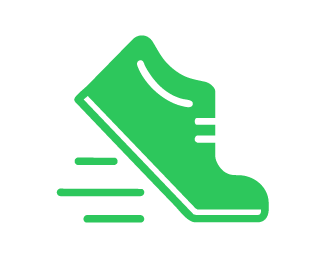
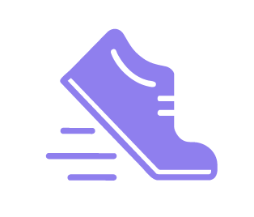
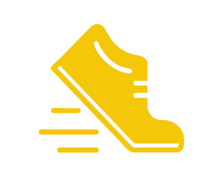
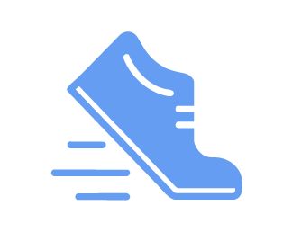
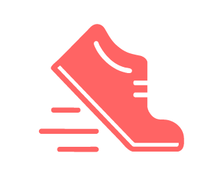

Einführung in die Community
Geteilte Werte, Akteure und Expertisen
An einer Vision von gemeinsamen und fairen Diamond Open Access sind sechs Akteursgruppen zu beteiligen: Wissenschaftliche Bibliotheken, Diamond-Open-Access-Verlage, Open-Access-Projekte, -Initiativen und -Infrastrukturen, die Forschungsförderung, Fachvertretungen und Diamond-Open-Access-Zeitschriften. Diese sechs Gruppen basieren auf dem Stakeholder-Mapping des AuROA-Projekts (2022), das wiederum aus einer Befragung von Autor:innen, Workshops, weiteren Veranstaltung und persönlichen Gesprächen hervorging. Dabei wurden Stakeholder im Open-Access-Publikationsprozess in den Geisteswissenschaften identifiziert und von uns im Hinblick auf Organisations- und Finanzierungsfragen von Diamond Open Access angepasst.
Die sechs Akteursgruppen sind eng miteinander verbunden und arbeiten gemeinsam an fairem Diamond Open Access. Dabei wird Diamond Open Access im Sinne der Definition von Hahn et al. (2023, S. 8) verstanden:
„Diamond OA basiert auf der Idee der Wissensweitergabe und einem Engagement für soziale Werte wie Vielfalt (in Fachgebieten, Disziplinen und Sprachen) und Chancengleichheit in Bezug auf Zugang und Teilnahme. Auf diese Weise steht Diamond OA für die Autonomie des wissenschaftlichen Publizierens und die Bereitstellung von Dienstleistungen für Forschungsgemeinschaften ohne kommerzielle Interessen.“
„Diamond OA is based on the idea of sharing knowledge and on a commitment to social values such as embracing diversity (in subjects, disciplines, and languages) and equity in access and participation. In this way, Diamond OA stands for the autonomy of scholarly publishing and providing service to research communities without commercial interests.“
Ziel des gesamten Prozesses ist gemeinschaftlich getragenes Diamond-Open-Access-Publizieren, das durch einen wissenschaftsgeleiteten Ansatz, geteilte Werte und Prinzipien sowie das verbindliche Engagement aller beteiligten Akteure geprägt ist. Dieses sogenannte wertegeleitete Publizieren rückt eine Non-Profit-Orientierung und die Ausrichtung am Gemeinwohl in den Vordergrund. Im Fokus stehen dabei Transparenz und Fairness im Sinne eines freien Zugangs, fairer Arbeitsbedingungen und fairer Lizenzen. Wir sprechen daher in Anlehnung an den englischen Commons-Begriff auch von gemeinwirtschaftlichem Diamond Open Access. Eine erfolgreiche Zusammenarbeit in einem solchen gemeinschaftlichen Modell beruht auf Prinzipien wie Verbindlichkeit, klarer Aufgabenverteilung, offener Kommunikation, einem Diskursraum für unterschiedliche Perspektiven sowie aktiver Vernetzung innerhalb der Open-Access-Community.
Alle Akteur:innen können einen konkreten, individuellen Beitrag zu einem solchen gemeinwirtschaftlichen Publikationsmodell leisten, wie die einzelnen Pfeile in der Grafik verdeutlichen. Im folgenden Abschnitt werden die Akteure und ihre individuellen Aufgaben näher erläutert.
Ein gemeinschaftlicher Prozess
Akteure und zentrale Themenfelder von Diamond Open Access und ihre Wechselwirkungen
Wir verstehen Diamond Open Access als das Ergebnis eines gemeinsamen Prozesses. Dabei ist entscheidend, die einzelnen Akteursgruppen und ihre Beiträge zu zentralen Themenfeldern sichtbar zu machen. Zentrale Themenfelder, durch die Diamond Open Access als ganzheitliches Modell greifbar wird, sind: nachhaltige Finanzierung, robuste Governance und Organisationsprinzipien, Qualität, Reputation und Transparenz sowie Netzwerke und Community-Arbeit. Diese Themenfelder haben wir durch Literaturrecherche und Interviews identifiziert und zur Vertiefung jeweils vier thematische Multi-Stakeholder-Workshops durchgeführt.
Die vier zentralen Diamond-Open-Access-Themenfelder werden einerseits von den verschiedenen Akteursgruppen beeinflusst. Andererseits bestehen auch Verknüpfungen zwischen den Themenfeldern, die durch die Pfeile dargestellt sind. Im Unterkapitel Themenfelder werden diese Beziehungen näher erläutert.
Akteure
Im Folgenden stellen wir die spezifischen Expertisen der sechs beteiligten Akteursgruppen vor. Jede Gruppe bringt besondere Fähigkeiten und Perspektiven in ein gemeinschaftliches Publikationsprojekt ein.
Dabei wird jeder Akteur zunächst anhand kurzer Beispiele eingeführt. Anschließend beleuchten wir die jeweiligen Beteiligungsmöglichkeiten anhand drei verschiedener Kategorien:
- Teamfähigkeit: Welche Schritte kann die Akteursgruppe innerhalb der eigenen Institution unternehmen, um gemeinschaftliche Strukturen zu fördern?
- Nachhaltigkeit: Wie kann die Gruppe dazu beitragen, Diamond Open Access langfristig tragfähig zu gestalten?
- Beitrag: Welche konkreten inhaltlichen oder strukturellen Beiträge kann die Akteursgruppe auf Basis ihrer Expertise in eine gemeinschaftliche Publikationsstruktur einbringen?
Diamond-Open-Access-Zeitschriften
Diamond-Open-Access-Zeitschriften spielen in vielen Disziplinen eine wichtige Rolle für die Diamond-Open-Access-Transformation. Einerseits ist die langfristige Finanzierung von Infrastruktur und Personal eine zentrale Voraussetzung für ihre Arbeit. Gleichzeitig können sie durch ihre flexiblen Strukturen Pionierarbeit leisten, indem sie neue Lösungsansätze entwickeln, wobei sie besonders auf die Bedürfnisse des eigenen Faches eingehen. Auch zur Reputation von Diamond Open Access können Zeitschriften durch die Einbindung renommierter Wissenschaftler:innen beitragen.
 Teamfähigkeit
Teamfähigkeit
- Zeitschriften können insbesondere ihre flexiblen und effizienten Strukturen nutzen, um Veränderungen anzustoßen und Diamond-Open-Access-Überzeugungsarbeit zu leisten. Viele Herausgebende haben sich ihr Wissen zu Open-Access-Themen eigenständig angeeignet. Dadurch können sie die Perspektive von Personen und Institutionen verstehen, die mit Diamond Open Access noch wenig vertraut sind und die Vorteile besonders nachvollziehbar und überzeugend vermitteln.
- Durch ihre Erfahrungen im Redaktionsalltag können sie Governance-Strukturen („Good Practices“) für Redaktionen entwickeln und Empfehlungen („Use Cases“) zu Transformations- und Flipping-Prozessen verfassen.
- Es ist von zentraler Bedeutung, dass Zeitschriften weniger mit Diamond Open Access vertraute Akteure im Transformationsprozess einbinden und diesen aktiv gestalten.
 Nachhaltigkeit
Nachhaltigkeit
- Zeitschriften können die Nachhaltigkeit von Diamond Open Access insbesondere durch Reputation fördern – zum Beispiel durch die Einbindung renommierter internationaler Wissenschaftler:innen in Editorial Boards oder als Gasteditor:innen.
- Anstelle quantitativer Metriken sollten inhaltliche Qualität und zielgruppenspezifische Adressierung in den Vordergrund rücken. Dies kann beispielsweise durch die Indizierung von Veröffentlichungen in Fachdatenbanken gelingen, da hierbei bestimmte Qualitätskriterien einzuhalten sind.
- Ein weiterer zentraler Punkt ist die transparente Kommunikation von internen Qualitätskriterien (zum Beispiel Peer-Review-Verfahren), Ethikrichtlinien und Produktionsabläufen, um Vertrauen aufzubauen und die Wahrnehmung der Publikation nachhaltig zu stärken. Dazu trägt auch gezielte Öffentlichkeitsarbeit bei, um Sichtbarkeit und Relevanz zu erhöhen.
- Letztlich sind eine interne Festlegung von genauen Diamond-Open-Access-Zielen und eine klare Aufgabenverteilung durch die Herausgebenden erforderlich.
 Beitrag
Beitrag
- Die Pionierarbeit von Zeitschriften könnte darin bestehen, experimentierfreudige Lösungen zu entwickeln, um Diamond Open Access voranzubringen – beispielsweise durch innovative Publikationsformate. Da bislang keine Standard-Lösungen für Diamond Open Access existieren, ermöglicht die eigene Erprobung, Erfahrungen zu sammeln und diese wiederum in gemeinschaftliche Modelle einzubringen.
- Zeitschriften besitzen eine besondere Expertise im Publishing-Prozess und zu internen Qualitätssicherungsverfahren. Dieses Wissen mit anderen Akteuren eines gemeinschaftlichen Publikationsprojekts zu teilen, stellt einen essentiellen Beitrag dar. Ergänzend können sie Infrastrukturen für Publishing-Prozesse und Redaktionsarbeit bereitstellen.
Wissenschaftliche Bibliotheken
Wissenschaftliche Bibliotheken lassen sich zwischen Wissenschaft und Publikationsdienstleistern sowie herausgebenden und finanzierenden Einrichtungen verorten. Durch diese Position verfügen sie über Einblicke in die Perspektiven verschiedener am Publikationsprozess beteiligter Akteure und können dadurch eine vermittelnde Rolle einnehmen. Gleichzeitig bringen sie zahlreiche rechtliche, technische und redaktionelle Expertisen in ein gemeinschaftliches Publikationsvorhaben ein.
Teamfähigkeit
- In einem ersten Schritt geht es darum, eigene Strukturen und Abläufe kritisch zu hinterfragen. Das können auch wissenschaftliche Bibliotheken tun, indem sie sich zunächst einmal auf die eigenen Werte als Bibliothek berufen und die Motivation innerhalb der Bibliothek wecken, für den Ausbau von Diamond Open Access auf Basis der eigenen Wertvorstellungen zu werben.
- In diesem Kontext steht auch die Frage nach dem Informationsbudget von Bibliotheken. Ganz konkret wäre ein erster Schritt, eine Bestandsaufnahme in der eigenen Bibliothek durchzuführen, Transparenz zu schaffen und zu prüfen: Wer publiziert wo? Was wird überhaupt gefördert? Welcher Anteil davon ist Diamond Open Access? Was wollen wir weiter finanzieren? So können Gelder im Budget sichtbar gemacht und verhindert werden, dass nur am Ende übrig gebliebene Mittel für Diamond Open Access verwendet werden. Auf dieser Basis muss auch die Erwerbungslogik einer Bibliothek, also die Strategie, nach der sie ihre Datenbestände pflegt und erweitert, auf den Prüfstand gestellt werden. So können beispielsweise kleinere Diamond-Open-Access-Initiativen und -Zeitschriften gefördert oder empfohlen werden, statt einen Großteil der Mittel in DEAL-Verträge und APCs/BPCs zu investieren.
Nachhaltigkeit
- Um Diamond Open Access nachhaltig zu fördern, können sich wissenschaftliche Bibliotheken zu einer langfristigen Finanzierung von explizit gemeinschaftlichem und fairem Diamond Open Access verpflichten. Haushalts- und verfassungsrechtliche Fragen zur Finanzierung von Diamond Open Access mit öffentlichen Mitteln sind bislang jedoch ungeklärt und schaffen Rechtsunsicherheit bei Einrichtungen und Publikationen. Eine vertiefte rechtliche Prüfung durch den Verfassungsblog legt nahe, dass Wissenschaftsfreiheit und Hochschulautonomie im Rahmen von Wirtschaftlichkeitserwägungen in der Erwerbung bisher ebenso vernachlässigt wurden wie die Hochschulen und wissenschaftlichen Bibliotheken zugewiesenen Aufgaben.
- Auch die Netzwerkarbeit und die Zusammenarbeit mit anderen Bibliotheken sind von zentraler Bedeutung. Dazu gehören zum Beispiel gemeinsames Handeln in Konsortien – nicht zuletzt auch im Hinblick auf die Verhandlungsmacht gegenüber großen Verlagen – und die Förderung der Nachnutzung und Verstetigung erfolgreicher konsortialer Modelle. Auch Community-Arbeit innerhalb der eigenen Institution und im Verbund mit anderen Bibliotheken ist essentiell. Gemeinsam mit anderen Bibliotheken, Hochschulen und Verlagen kann die Entwicklung übergreifender Publikationsinfrastrukturen angestoßen werden.

Beitrag- Wissenschaftliche Bibliotheken besitzen umfangreiche Expertise, die sie in Form von Beratungsangeboten in ein gemeinschaftliches Modell einbringen können. Dazu gehören beispielsweise Informationsangebote für Wissenschaftler:innen zu rechtlichen und technischen Fragen, zur Optimierung von Arbeitsprozessen oder Angebote zur Aufklärung über Publikationsethik. Auch die Entwicklung von Mechanismen zur Nachwuchsrekrutierung für Redaktionen und die Entwicklung von Empfehlungen für Herausgeber:innen zum Journal-Flipping sind konkrete Ansätze, um Expertise einzubringen.
- Neben solchen Beratungsangeboten können wissenschaftliche Bibliotheken auch redaktionelle Ressourcen und technische Infrastrukturen bereitstellen.
- Auch die Reputation von Diamond-Open-Access-Publikationen kann durch Bibliotheken gestärkt werden, beispielsweise durch eine intensive Bewerbung und Empfehlung von Diamond Open Access. So können Bibliotheken Herausgeber:innen von Zeitschriften das Flipping empfehlen oder durch die Optimierung von Arbeitsabläufen und Prozessen dazu beitragen, Diamond Open Access attraktiver für Wissenschaftler:innen zu machen.
- Nicht zuletzt können Bibliotheken Aufklärungsarbeit leisten, indem sie Diamond Open Access als Alternative zu kommerziellem Publishing sichtbar machen und zugleich zu zentralen Fragen wie Kosten, Abhängigkeiten und der Wahrung wissenschaftlicher Integrität beraten.
Dazu ist es unerlässlich, Bibliotheken in die Governance-Strukturen gemeinschaftlicher Publikationsvorhaben einzubinden, damit sie von den anderen Akteuren als gleichwertige Partner geschätzt und nicht lediglich als Geldgeber wahrgenommen werden. Das wird auch in unserer Interviewstudie deutlich:
„Und viele, oder die Rückmeldung von vielen, die wir dort erhalten, ist tatsächlich, dass [die Bibliothekar:innen] das sehr begrüßen, weil sie sich dadurch eben auch mehr aktiv eingebunden fühlen und eben nicht nur, wie man im Englischen sagt, die Purseholders, also Geldgeber [sind].“
Diamond-Open-Access-Verlage
Diamond-Open-Access-Verlage sind teils wissenschaftsgeleitete Einrichtungen, die sich Diamond-Open-Access-Publizieren als zentrales Ziel gesetzt haben, ohne profitorientiert zu handeln. Auch hier ist die fehlende Finanzierung von redaktioneller Arbeit eine große Herausforderung. Sie haben eine besondere Expertise für Organisationsstrukturen und können Innovationen anstoßen, da sie sich außerhalb der traditionellen Verlagslogiken bewegen (Deville et al., 2019, S. 5).
Teamfähigkeit
- Eine besondere Stärke von Verlagen liegt in ihrer Erfahrung im Publikationsprozess, die sie beispielsweise an Publikationen mit Beratungsbedarf weitergeben können.
- Eine Form der Community-Arbeit kann darin bestehen, über eigene Arbeits- und Wirtschaftsgrundlagen zu informieren und Transparenz über die eigenen Leistungen, Kosten und Preise zu schaffen. Dies kann auch intern dazu beitragen, Selbstausbeutung zu vermeiden, die durch mangelnde Kostentransparenz entstehen kann (Expert:in Interviewstudie, Transkription 2, Abs. 65).
Nachhaltigkeit
- Verlage können zur Nachhaltigkeit von Diamond Open Access beitragen, indem sie die Reputation der offenen Publikationsform stärken. Dies kann durch die Festlegung von Qualitätsstandards mit Redaktionen und Transparenz im Publishing-Prozess erreicht werden.
- Außerdem können sie dazu beitragen, die Stärken kleiner, universitärer oder lokal agierender Verlage im Gegensatz zu großen kommerziellen Anbietern sichtbar zu machen.
- Ein Beitrag zur Nachhaltigkeit kann auch das „Co-editing“, also das Teilen von Ressourcen, Kosten und Infrastrukturen mit anderen Verlagen sein (Maniero do Amaral & Furnival, 2023, S. 6-8).

Beitrag- Wie auch Zeitschriften können Verlage durch ihre eher flexiblen und effizienten Strukturen Pionier- und Überzeugungsarbeit leisten. Kleine, agile Verlage können andere vom Diamond-Modell überzeugen, wie auch schon der Übergang zu Gold Open Access gezeigt hat (Henkes et al., 2025, S. 38). Eine:r der interviewten Expert:innen sagt dazu:
„So, dass so kleinere, agile Verlage dann halt auch einfach das Experiment annehmen und dann halt mal gucken, und ob es [bezogen auf Diamond Open Access] funktioniert, und wenns halt nicht funktioniert, dann muss man halt wieder einen anderen Weg finden und dann kann man das halt auch dann wieder in die Community so reintragen.“
- Verlage können eine Rechtsform als Basis für eine gemeinschaftliche Publikationsstruktur bereitstellen. Durch ihre eingespielte redaktionelle Arbeit können sie in Gemeinschaftsprojekten außerdem Standards setzen, um eine hohe Qualität zu gewährleisten.
- Eine Kooperation mit kommerziellen Verlagen und Dienstleistern zum Austausch von Expertisen in Publishing und Governance kann stattfinden, sofern dabei bestimmte Kriterien berücksichtigt werden. Zentral ist die Bewahrung von individueller Unabhängigkeit, der Scholar-Led-Ansatz, Kostentransparenz und ein geteiltes Verständnis von wissenschaftlichem Publizieren als Dienst an der Gesellschaft. Konkret bedeutet das, dass Rechte am Werk weiterhin bei den Autor:innen liegen und eine Orientierung an disziplin- und länderübergreifenden Standards erfolgt.
Open-Access-Projekte, -Initiativen und -Infrastrukturen
Open-Access-Projekte und -Initiativen haben die Mittel und/oder Netzwerke, um die wissenschaftliche Community zusammenzubringen und Erfahrungsaustausch anzuregen. Sie können sich daher insbesondere in Bereichen wie der Community-Arbeit und der aktiven Weiterentwicklung von Diamond Open Access engagieren. Offen verfügbare Infrastrukturen und entsprechende Services können auch Akteur:innen mit begrenzten Ressourcen ermöglichen, sich im Bereich Diamond Open Access weiterzubilden und zu publizieren. Projekte, Initiativen und Infrastrukturen können unterschiedlich stark institutionalisiert sein – von fest in bestehende Strukturen integrierten Modellen bis hin zu formlosen Zusammenschlüssen, die von Wissenschaftler:innen oder der Community getragen werden.
Teamfähigkeit
- Im Rahmen eines gemeinschaftlichen Diamond-Open-Access-Publizierens können sich Initiativen und Projekte besonders für die Entwicklung community-geführter Infrastrukturen einsetzen, um eine mögliche Abhängigkeit von kommerziellen Anbietern aktiv zu verhindern (Barnes & Gatti, 2019).
- Gleichzeitig gilt es, Wege zu finden, um technische Expertise sowie bestehende community-geführte Infrastrukturen, Tools und Services gemeinsam nutzbar zu machen.
Nachhaltigkeit
- Die Verstetigung von Community-Arbeit in bestehenden Strukturen ist ein wichtiger Aspekt, um Nachhaltigkeit zu erreichen.
- Projekte, Initiativen und Infrastrukturen können besondere Unterstützungsangebote durch Training und Kompetenzerweiterung im Bereich Diamond Open Access leisten.
- Sie können außerdem Fachdisziplinen mit wenig Berührungspunkten oder einem geringen Budget über Diamond Open Access aufklären.
- Neben Aufklärungsarbeit gehören auch Lobbyarbeit und die Bewerbung von Diamond-Open-Access-Modellen bei politischen Akteuren oder Hochschulen dazu, wie eine interviewte Person betont:
„Also ich glaube schon, dass es unterschiedliche Expertisen braucht in diesen gemeinwirtschaftlichen Organisationsformen, um das wirklich zum Fliegen zu bringen. Also, klar Geld. Aber ja, wir wissen, dass die Zeitschrift[en] mit vielen Herausforderungen gleichzeitig konfrontiert sind und da Support brauchen. Insofern glaube ich [...], dass Projekte da eine sinnvolle Ergänzung sein können, gerade auch was die Lobbyarbeit angeht. Bei den politischen Akteuren, bei den Hochschulen, also bei den Leitenden von Institutionen und dergleichen, immer wieder auch ja quasi die Fahne schwenken für Diamond Open Access und die Vorteile immer wieder klar machen können, weil ich glaube, es braucht Zeit und viel Lobbyarbeit, weil sich die Szene auch weiterentwickelt und dann immer wieder geschaut werden muss, wo stehen wir eigentlich?“

Beitrag- Als „Awareness-Plattformen“ können Initiativen und Projekte den Austausch unter Autor:innen fördern, die an der Etablierung gemeinschaftlicher Publikationsstrukturen interessiert sind, Erfahrungen teilen und Netzwerke pflegen.
- Das Einleiten, Unterstützen und Bewerben von gemeinschaftlichen Strukturen wie der Konsortialfinanzierung gehört ebenfalls zu den Stärken dieser Akteursgruppe.
- Zuletzt können Projekte, Initiativen und Infrastrukturen eine führende Rolle übernehmen, um Diamond Open Access voranzubringen. Das Beispiel der nationalen Servicestelle für Diamond Open Access (SeDOA) zeigt dies besonders gut:
„Das DFG-geförderte Projekt SeDOA hat zum Ziel, die Effizienz des Diamond Open Access (DOA) Publizierens in Deutschland durch bessere Koordinierung und Optimierung von dezentralen Dienstleistungen, Bereitstellung zentraler Informationen sowie Innovationen zu steigern.“
Forschungsförderung
Die Forschungsförderung kann einen entscheidenden Beitrag zur Verbreitung von gemeinschaftlichen Diamond Open Access leisten – insbesondere durch präzise Richtlinien und Standards zur Verbesserung der Diamon-Open-Access-Finanzierung. Außerdem kann sie dringend notwendige wissenschaftspolitische Veränderungen anstoßen.
Teamfähigkeit
- Um Diamond Open Access als Gemeinschaftsprojekt zu verwirklichen, müssen die Rahmenbedingungen der Förderung verbessert werden. Dazu können Forschungsförderer ihre Kontakte zu politischen Entscheidungsträgern nutzen und Lobbyarbeit betreiben.
- Überzeugungsarbeit für Diamond Open Access muss aber nicht nur in der Wissenschaftspolitik geleistet werden, sondern auch direkt bei den Forschenden. Viele entscheiden sich weiterhin gegen eine Veröffentlichung ihrer Forschungsergebnisse in Diamond Open Access. Gleichzeitig orientieren sich Förderer an Publikationsorten der durch sie geförderten Wissenschaftler:innen. So fördert die Deutsche Forschungsgemeinschaft in ihrem Förderprogramm zu Open-Access-Publikationen mit lediglich 4% der gesamten Fördersumme Diamond-Open-Access-Monographien. Um Forschende für Diamond Open Access zu gewinnen, sind auch Investitionen in die Wissenschaftskommunikation durch Forschungsförderer erforderlich.
Nachhaltigkeit
- Um eine nachhaltige Finanzierung zu gewährleisten, müssen fördernde Institutionen neben Publikationen auch Redaktionen und Infrastrukturen dauerhaft und vor allem projektunabhängig unterstützen. Die Bedeutung projektunabhängiger Förderung wird auch in unserer Interviewstudie ersichtlich:
„Ein großes Manko bei der Nachhaltigkeit ist, dass natürlich im gesamten Wissenschaftsbereich, so auch hier, vieles was passiert erst mal projektbasiert ist. Und viele Geldgeber, die grundsätzlich auch glaube ich ein Interesse daran hätten, Diamond Open Access langfristig zu finanzieren, keine Förderung machen dürfen, die nicht projektbasiert ist. Also wie die DFG, die ja sehr genau weiß, dass sie sozusagen in dem gesamten Bereich, wo es um wissenschaftliche Infrastrukturen geht, immer das Dilemma produziert, Infrastrukturen projektbasiert zu finanzieren, was sozusagen eigentlich gar nicht gehen kann, weil Infrastrukturen was Dauerhaftes sind.“
- Zur Ermöglichung nachhaltiger Finanzierung sollten bestehende Förderlogiken kritisch hinterfragt werden, um finanzielle Mittel gezielt in die systemische und strukturelle Förderung von Publikationen zu investieren. Sinnvoll ist dabei auch ein Austausch mit Förderinstitutionen anderer Länder und Bundesländer. Konkret kann das bedeuten, kleine Initiativen wie KOALA gegenüber DEAL-Verträgen zu priorisieren. Außerdem sollte die Förderung nicht vorrangig auf die Zahlung von APCs oder die Unterstützung hybrider Open-Access-Modelle ausgerichtet sein, sondern auf Diamond Open Access fokussiert werden. So können auch Impulse zur Finanzierung und Verstetigung von Community-Strukturen gesetzt werden.
- Forschungsförderung kann schließlich auch als Inkubator für neue Initiativen wirken und Journals, Bücher oder Infrastrukturen mit begrenzter Anschubförderung innerhalb eines realistischen Zeitrahmens unterstützen.

Beitrag- Um einen konkreten Beitrag für gemeinschaftliches und faires Diamond Open Access zu leisten, können Forschungsförderer gemeinsame Förderkriterien („common good criteria“) entwickeln, standardisieren und kommunizieren. Diese sollten gemeinsam mit den Fachcommunities ausgehandelt und national und international koordiniert werden. Dazu ist eine Zusammenarbeit mit anderen nationalen und internationalen Forschungsförderern unerlässlich. Ein konkreter Ansatz wäre, die Existenz und Qualität längerfristiger Finanzierungskonzepte als Bewertungskriterium aufzunehmen.
- Ein drastischer, aber wirksamer Schritt wäre, über einen Mindestanteil der öffentlichen Fördermittel für gemeinschaftliches Diamond Open Access nachzudenken.
- Nicht zuletzt können auch Forschungsförderer einen Beitrag zum Wandel der Forschungsevaluation leisten. Entscheidend ist dabei, sich von rein quantitativen Metriken wie dem Journal Impact Factor zu lösen und qualitative Metriken wie eine zielgruppenspezifische Adressierung einzubeziehen, um Forschung angemessen bewerten und fördern zu können.
Fachvertretungen
Fachvertretungen nehmen eine Schlüsselrolle für die Reputation gemeinschaftlicher Diamond-Open-Access-Publikationen ein. So können sie die Reputation der jeweiligen Disziplin in gemeinschaftliche Projekte einbringen und gleichzeitig innerhalb ihrer Disziplin eine Vorreiterrolle für Diamond Open Access einnehmen. Außerdem können sie Kontinuität durch langfristige Stellen schaffen.
Teamfähigkeit
- Fachvertretungen können damit beginnen, den Diamond-Open-Access-Stand in der eigenen Community zu erfragen. Diese Bestandsaufnahme kann den Ausgangspunkt für Advocacy-Arbeit innerhalb der eigenen Disziplin bilden. Fachvertretungen können Diamond Open Access innerhalb der eigenen Disziplin verbreiten, indem sie die Relevanz der offenen Publikationsform verdeutlichen und aktives Engagement der Wissenschaftler:innen einfordern. Dies kann beispielsweise durch ein Botschafter:innenmodell erfolgen, bei dem einzelne Wissenschaftler:innen innerhalb der Disziplin über Diamond Open Access informieren und aufklären. Auch Weiterbildungsangebote können helfen, die Motivation für Diamond Open Access zu erhöhen. Aufgrund ihrer Nähe zu Forscher:innen und Herausgeber:innen eignen sich Fachvertretungen zudem besonders als Multiplikatoren, beispielsweise als Ansprechpartner für Journal-Flipping.
- Nicht alle Fachvertretungen sind in Bezug auf Diamond Open Access gleich gut aufgestellt. Das zeigt auch unsere Interviewstudie:
„Und es gibt Bereiche und Disziplinen, in denen es funktioniert. Das ist die Sprachwissenschaft, das ist hier die Geologie. In gewisser Hinsicht ist es Physik und/oder Mathe. Aber verschiedene Fachcommunities gehen irgendwie nicht nach vorne, sondern warten darauf, dass was passiert oder probieren vielleicht auch eher Probleme zu finden als Lösungen.“
Hier können Fachinformationsdienste und einzelne Wissenschaftler:innen ansetzen, um thematisch nahe Fachvertretungen stärker für das Thema Diamond Open Access zu mobilisieren.
- Auch auf internationaler Ebene können Fachvertretungen Einfluss ausüben, indem sie Kontakte zu internationalen Vertretungen derselben Disziplin pflegen, Austausch anregen und beispielsweise die gemeinsame Nutzung von Infrastrukturen fördern.
Nachhaltigkeit
- Als Schnittstelle zwischen Wissenschaft und Informationsbereich können Fachvertretungen eine Brückenfunktion einnehmen und eine beständige Zusammenarbeit dieser beiden Bereiche initiieren.
- Wie unsere Interviewstudie zeigt, können sie in gemeinschaftlichen Publikationsprojekten zu Kontinuität und Stabilität beitragen:
„Von daher glaube ich schon, dass es gut ist, wenn auch Fachgesellschaften sich da ein bisschen stärker einbringen [...] und die haben ja auch oft, vielleicht auch eine Geschäftsstelle und so, wo einfach ein bisschen mehr Kontinuität ist. Naja, ich glaube, man braucht generell irgendwie eine gute Mischung aus Leuten aus dem Informationsbereich und aus der Wissenschaft, die sich stärker committen und längerfristig zusammenarbeiten.“
Dabei ist jedoch zu beachten, dass nicht alle Fachvertretungen professionell organisiert sind und über langfristige Stellen oder eine Geschäftsstelle verfügen.
- Durch das Einplanen fester Gelder für gemeinschaftliches Diamond Open Access können Fachvertretungen – entsprechend den individuellen finanziellen Möglichkeiten – die nachhaltige Finanzierung eines Gemeinschaftsprojekts unterstützen.
- Neben einer Bestandsaufnahme der Verbreitung von Diamond Open Access in der eigenen Disziplin ist es ebenso wichtig, klare Ziele für diese Publikationsform zu definieren.

Beitrag- Für gemeinschaftliche Diamond-Open-Access-Publikationen des jeweiligen Fachs können angesehene Fachvertretungen Vertrauenswürdigkeit und Reputation schaffen. Konkret kann das beispielsweise durch eine direkte Anbindung der Publikation an die Fachvertretung erfolgen. Dies erhöht wiederum die Bereitschaft von Wissenschaftler:innen, Diamond Open Access zu publizieren.
- Fachvertretungen einzelner Disziplinen sollten eine stärkere Vorreiterrolle einnehmen und kreative Lösungen entwickeln. Dabei ist auch eine gewisse Risikobereitschaft erforderlich, zum Beispiel beim Journal-Flipping.
- Darüber hinaus können sich Fachvertretungen in den Governance-Strukturen eines gemeinschaftlichen Publikationsprojekts besonders einbringen – zum Beispiel, wenn sie Träger der entsprechenden Diamond-Open-Access-Publikationsorte sind.
Untenstehend werden einige Diskussionspunkte aufgeführt, die in der Community immer wieder angesprochen werden – sortiert nach Akteuren. Diese sind nicht abschließend und spiegeln nicht unbedingt die Meinung der Autor:innen wider. Sie sollen vielmehr Denkanstöße liefern und zum weiteren Austausch anregen.
DIAMOND-OPEN-ACCESS-ZEITSCHRIFTEN
In der Community besteht Unsicherheit darüber, welche Kriterien eine verlagsbetriebene Open-Access-Zeitschrift erfüllen muss, um als „Diamond“ eingestuft zu werden. Es besteht daher ein Bedarf an einer einheitlichen und offiziellen Definition des Begriffs.
Darüber hinaus wird diskutiert, ob Plattformen mit peer-reviewten Multimedia-Inhalten ebenfalls zur Akteursgruppe „Zeitschriften“ gezählt werden sollten und ob der Begriff „Zeitschrift“ in diesem Zusammenhang zu eng definiert ist. In der Debatte wird außerdem die Frage aufgeworfen, ob Zeitschriften in ihrer gegenwärtigen Form künftig noch erforderlich sind. In diesem Szenario bräuchte es auch keine Verlage, sondern nur ein Editorial Board, das die Qualität der Beiträge gewährleistet. Diese Art des Publizierens könnte bisherige Erwerbungs- und Marktlogiken durchbrechen.
WISSENSCHAFTLICHE BIBLIOTHEKEN
Wissenschaftliche Bibliotheken sind auch von finanziellen Rahmenbedingungen und institutionellen Vorgaben durch Universitäten oder Hochschulen abhängig, was Entscheidungsspielräume begrenzt. Erwerbungsmittel sind endlich und müssen in einigen Fällen auf die grundlegende Informationsversorgung konzentriert werden. Zudem ist eine hoher Anteil des Informationsbudgets von Bibliotheken in DEAL-Verträgen gebunden (im Gegensatz zu einem geringen Budget für Diamond Open Access), was bestehende Abhängigkeiten und Reputationsmechanismen verstärkt. (Fischer, Neufend, & Kindling, 2024)
Wie alle anderen Akteure sind auch wissenschaftliche Bibliotheken von großen Verlagen und bestehenden Reputationsmechanismen (z.B. hoher Relevanz von Metriken wie dem Journal Impact Factor) abhängig. Forschende entscheiden sich aus vermeintlichen Reputationsgründen häufig gegen eine Diamond-Open-Access-Publikation, obwohl bestimmte Diamond-Open-Access-Zeitschriften oder -Verlage in ihrer Disziplin sehr angesehen sind. Ein Problem ist außerdem, dass Förderinstitutionen und Berufungskommissionen Publikationen bei großen renommierten Verlagen höher bewerten. Um den Handlungsspielraum der Bibliotheken zu lockern, müssen sich diese Rahmenbedingungen ändern. Andererseits können wissenschaftliche Bibliotheken Impulse setzen, um einen Wandel anzustoßen und das sich selbst verstärkende System zu durchbrechen:
– Diamond Open Access in der Wissenschaftscommunity bewerben
– Anstoß von Diskursen zur Bewertung wissenschaftlicher Publikationen
– Vernetzung und Austausch zwischen Forschenden und Open-Access-Akteuren
– Förderung (erfolgreicher), aber gefährdeter Diamond-Open-Acccess-Publikationen
Auch die direkte Förderung von Bibliotheken als Infrastrukturanbieter wird von der Community gefordert, damit diese Publikationsdienstleistungen nachhaltig aufbauen können. Außerdem wird darauf hingewiesen, dass einige Bibliotheken auch selbst als Verlage in Erscheinung treten und dann verschiedene Rollen ausbalancieren müssen.
DIAMOND-OPEN-ACCESS-VERLAGE
Ein Aspekt, der in Bezug auf die Verlagsarbeit besonders kontrovers diskutiert wird, ist die Zusammenarbeit mit kommerziellen Verlagen. Wie zuvor im Kontext von Verlagen erörtert, gibt es die Ansicht, dass Expertise und Dienstleistungen kommerzieller Verlage nicht ausgeschlossen werden sollten. Auch wenn Gemeinwohlorientierung als Kriterium für die Zusammenarbeit herangezogen wird, existiert kein allgemeingültiges Prüfverfahren und die Zusammenarbeit mit kommerziellen Verlagen weckt die Sorge, die eigene Unabhängigkeit zu verlieren. Vor diesem Hintergrund stellt sich die Frage, welche kommerziellen Verlage und Dienstleistungsanbieter grundsätzlich für eine Integration in die Open-Access-Community geeignet sind, wie eine solche Einbindung gestaltet werden kann und an welchen Punkten profitorientierte Marktlogiken eine Zusammenarbeit begrenzen oder gar ausschließen. Ein transparenter Umgang ist hier entscheidend.
OPEN-ACCESS-PROJEKTE, -INITATIVEN UND -INFRASTRUKTUREN
In der Open-Access-Community wird darüber diskutiert, ob Publikationsinfrastrukturen (wie PKP) und Informationsinfrastrukturen (wie DOAJ) als gemeinsame Akteursgruppe beschrieben oder getrennt betrachtet werden sollten.
FORSCHUNGSFÖRDERUNG
Die Community sieht die Forschungsförderung zwar in der Pflicht, einen Wandel der Forschungsevaluation anzustoßen und Diamond-Open-Access-Förderkriterien zu standardisieren, nimmt allerdings auch die Wissenschaft selbst in die Verantwortung. Dabei stellen sich zentrale Fragen: Was ist ein relevantes Publikationsorgan? Was wird als relevant betrachtet? Wie wird Erfolg gemessen?
Eine Option, die Finanzierung von Diamond Open Access neu zu denken, liefern die Nationale Akademie der Wissenschaften Leopoldina und die Deutsche Forschungsgemeinschaft mit ihrem Vorschlag eines direkten Finanzierungsmechanismus mit Fokus auf die Fachgesellschaften (Tautz et al., 2025).
FACHVERTRETUNGEN
Fachvertretungen werden von Teilen der Community als eher konservativ in Bezug auf ihr Commitment zu Diamond Open Access eingeschätzt. Vor diesem Hintergrund stellt sich die Frage, ob es sich hinsichtlich Zeit und Ressourcen lohnt, Fachvertretungen stärker für Diamond Open Access zu motivieren, und welche Akteure geeignet wären, Fachvertretungen mit anzusprechen, wenn sie kaum Berührungspunkte haben. Diese Aufgabe könnten Fachinformationsdienste oder einzelne Wissenschaftler:innen erfüllen.
Ein zentrales Problem für die Verbreitung von Diamond Open Access besteht darin, dass Fachvertretungen meist ihre eigenen Zeitschriften herausgeben und ein geringes Interesse an der Förderung externer Diamond-Open-Access-Zeitschriften zeigen. Umgekehrt existieren Zeitschriften, die trotz thematischer Nähe kaum Verbindungen zu den jeweiligen Fachvertretungen haben. Zudem sind Fachvertretungen nicht für alle Zeitschriften gleichermaßen relevant. Daraus ergibt sich die Frage, wie Fachgesellschaften für Zeitschriften attraktiv werden können.
Zudem stellt sich die Frage, wie Zeitschriften von Fachvertretungen an Popularität und Reputation gewinnen können, um mit den führenden Zeitschriften kommerzieller Verlage zu konkurrieren. Offene Fragen sind dabei: Was benötigen Fachzeitschriften, um an Bedeutung zu gewinnen? Welche Ziele wollen wir erreichen? Wie wird Erfolg definiert und diskutiert?
Außerdem weist die Community auf die unterschiedliche Struktur und den variierenden Organisationsgrad von Fachvertretungen hin. Da nicht alle Fachvertretungen professionell aufgestellt sind und langfristige Stellen schaffen können, könnten stattdessen wissenschaftliche Bibliotheken im Rahmen eines gemeinschaftlichen Modells für Stabilität sorgen.
Themenfelder
Die im Bericht aus Literatur und Interviews identifizierten vier zentralen Themenfelder wurden in einzelnen Workshops mit der Open-Access-Community diskutiert, um unterschiedliche Bedarfe, Interessen und Erfahrungen zusammenzuführen. Als besonders zentral hat sich immer wieder das Thema der nachhaltigen Finanzierung herausgestellt, da diese letztlich die Grundlage für alle anderen Dimensionen eines gemeinschaftlichen und fairen Diamond-Open-Access-Publizierens bildet.
Um wissenschaftliches Publizieren als ganzheitliches Modell zu begreifen, braucht es zudem eine robuste Governance, Qualität und Reputation der Publikationen sowie eine strukturierte Community-Arbeit. Diese Bereiche sind eng miteinander verflochten, wie auch die Pfeile in der oben stehenden Grafik veranschaulichen. Wie bereits erwähnt, ist eine verlässliche Finanzierung Voraussetzung für funktionierende Community-Arbeit, Governance-Strukturen und eine hohe Publikationsqualität. Umgekehrt kann eine gesteigerte Reputation neue Finanzierungsmöglichkeiten eröffnen. Gleichzeitig ist es wichtig, finanzierende Akteure wie wissenschaftliche Bibliotheken in die Governance-Strukturen einzubinden und ihnen Mitspracherechte einzuräumen. Weiterhin kann die Open-Access-Community Qualität und Reputation der Publikation stärken, indem sie alternative qualitative Reputationsmechanismen aktiv unterstützt. Governance-Strukturen müssen so angelegt sein, dass sie eine Verstetigung von Community-Strukturen vorantreiben, während die Community gleichzeitig auf die Gestaltung dieser Organisationsstrukturen einwirken kann.
Nachhaltige Finanzierung
Die Frage der nachhaltigen Finanzierung spielt für gemeinschaftliche Diamond-Open-Access-Publikationsprojekte eine wesentliche Rolle. Um ein wissenschaftsgeleitetes Publikationswesen zu unterstützen, sollen im Diamond-Open-Access-Modell finanzielle Hürden für Autor:innen und Leser:innen vollständig abgebaut werden. Grundlegend notwendig ist hier die Langfristigkeit und Verbindlichkeit der Finanzierung. Das Fehlen projektunabhängiger Finanzierung und die unzureichende Unterstützung von Redaktionsarbeit und dauerhaften Infrastrukturen sind nach wie vor aktuelle Herausforderungen. Um diesen zu begegnen, sind eine Institutionalisierung von Finanzierungsstrukturen sowie Kostenbewusstsein und -transparenz entscheidend. Aber auch eine Diversifizierung von Finanzierungsquellen und community-geführte Finanzierungsansätze können Mittel sein, sich verlässlich abzusichern und Abhängigkeiten von kommerziellen Anbietern zu verhindern. Auch die kritische Auseinandersetzung mit aktuellen Entwicklungen, wie den kostenintensiven DEAL-Verträgen oder den förderpolitischen Vorgaben zur Unterstützung von Diamond Open Access, ist dabei relevant. Darüber hinaus sollen faire Arbeitsbedingungen sowie der Ausstieg aus unbezahlter, ehrenamtlicher Arbeit in kollaborativen Publikationsvorhaben stärker in den Mittelpunkt rücken.
Insgesamt ist zu berücksichtigen, dass es kein universelles Finanzierungsmodell für alle gemeinschaftlichen Publikationsprojekte geben kann, da sich die Anforderungen und Rahmenbedingungen je nach Projekt stark unterscheiden können und Bibliodiversität als Stärke zu betrachten ist. Laut Open-Access-Community können jedoch einzelne Akteursgruppen zur Lösung der Finanzierungsproblematik in einem gemeinschaftlichen Modell beitragen. Sofern rechtliche Bedenken geklärt sind, können sich Bibliotheken aktiv für die Finanzierung von Diamond Open Access entscheiden. Fachvertretungen könnten ebenso direkter in die Finanzierung eingebunden werden und Universitätsverlage könnten ihre Infrastrukturen für die Veröffentlichung anderer Institutionen öffnen. Erste erfolgreiche Finanzierungsrunden von KOALA verdeutlichen die Funktionsfähigkeit konsortialer Finanzierungsmodelle und könnten die Hürden für eine künftige breitere finanzielle Beteiligung von Zeitschriften und Bibliotheken senken. Auch Forschungsförderer könnten mit präziseren Richtlinien zur Verbesserung der Diamond-Open-Access-Finanzierung beitragen. Insbesondere ein Fokus auf die Förderung von erfolgreichen gemeinschaftlichen Ansätzen ist ein wichtiger nächster Schritt. Finanzielle Verbindlichkeit der Akteure und eine klare und sichtbare Positionierung finanzierender Einrichtungen zu Diamond Open Access sowie aktive Überzeugungsarbeit und gezielte Öffentlichkeitsarbeit können entscheidend dazu beitragen, neue Förderer zu gewinnen.
Governance-Strukturen und Organisationsprinzipien
Das Themenfeld Governance beschäftigt sich mit Voraussetzungen, Chancen und potenziellen Herausforderungen einer gemeinsamen Organisation von Diamond-Open-Access-Publikationsmodellen. Der Governance-Begriff ist in der Open-Access-Community nicht unumstritten, da er teilweise negativ konnotiert ist. Einige Stimmen stellen die Verwendung des Begriffs sogar gänzlich infrage. Ungeklärte Aspekte sind beispielsweise, ob Governance eher übergeordnete Steuerungselemente oder konkrete Entscheidungsprozesse umfasst. Auch die Risiken komplexer Governance-Strukturen (wie zum Beispiel eine Verlangsamung von Prozessen) sowie der Grad der Formalisierung von Organisationsstrukturen werden unterschiedlich bewertet. Eine gewisse Struktur und gemeinsame redaktionelle Standards sind jedoch notwendig, um Herausforderungen wie ehrenamtliche Arbeit und langfristiges Personalmanagement zu bewältigen. Aus diesem Grund verwenden wir im Rahmen unseres Modells bewusst den Begriff Governance. Da die Community eine Vielfalt an Organisationsformen ausdrücklich befürwortet, können gemeinschaftliche Modelle verschiedene Governance-Strukturen aufweisen, darunter sowohl horizontale als auch vertikale Kooperationsformen (Adema & Moore, 2018, S. 3–4).
Bei der Organisation von Diamond Open Access ist für die Open-Access-Community der Aspekt der Kooperation und Kollaboration – insbesondere im Bereich von Infrastrukturen – zentral. Dazu gehören der Austausch von Wissen und die Nutzung und Weiterentwicklung bestehender Services und Open-Source-Infrastrukturen. Hierbei wird ein Spannungsverhältnis zwischen dezentral organisierten Community-Infrastrukturen und einer Zentralisierung von Angeboten deutlich. In ausgewählten Bereichen kann eine Zentralisierung von Infrastrukturen im Sinne einer effizienten Ressourcennutzung sinnvoll sein, sofern deren Aufbau und Betrieb in der Verantwortung nicht-profitorientierter Akteur:innen liegt.
Wie bereits erwähnt sind essentielle Prinzipien für eine erfolgreiche Zusammenarbeit geteilte Werte und Prinzipien, Transparenz, Commitment, eine klare Aufgabenverteilung, regelmäßige Kommunikation, ein offener Diskursraum für unterschiedliche Perspektiven und aktive Community-Arbeit. Eine fortwährende Bereitschaft zur Überprüfung und Anpassung von Prozessen ist unerlässlich, insbesondere wenn sich zeigt, dass bestehende Strukturen nicht (mehr) wirksam sind. Insbesondere Bibliotheken haben durch ihre Expertise und Erfahrung die Möglichkeit, sich in eine Governance-Struktur einzubringen, daher sollten sie ebenso wie andere zentrale Akteure von Anfang an aktiv in die Governance-Struktur eines gemeinschaftlichen Publikationsprojekts eingebunden werden. Open-Access-Verlage können ihre Erfahrung mit Organisationsstrukturen ebenso beitragen wie eine grundlegende Rechtsform, die als Struktur eines gemeinschaftlichen Publikationsprojekts dient. Eine spezifische Rechtsform wird weder in den geführten Interviews noch in den Diskussionen mit der Community empfohlen und kann entsprechend den Bedürfnissen der gemeinschaftlichen Organisation gewählt werden. Wichtig ist jedoch, dass im Geschäftsmodell von Beginn an Kapazitäten für Innovation, Vernetzung und Professionalisierung als fester Bestandteil eingeplant werden.
Die Rolle profitorientierter Akteure in Diamond-Open-Access-Organisationsmodellen wurde kritisch hinterfragt. Gleichzeitig könnten Kooperationen mit kleinen kommerziellen Verlagen zur Konsolidierung von Governance-Strukturen beitragen, solange der wissenschaftsgeleitete Ansatz gewahrt bleibt.
Qualität und Reputation
Qualität und Reputation sind zentrale Voraussetzungen für den Erfolg gemeinschaftlicher Diamond-Open-Access-Publikationsprojekte. Sie sind entscheidend, um einerseits Förderer für die Finanzierung zu gewinnen und andererseits Wissenschaftler:innen zur Wahl von Diamond-Open-Access-Publikationen zu motivieren. Da etablierte Verlage häufig automatisch mit einer hohen Reputation verbunden werden, müssen gemeinschaftliche Publikationsprojekte neben einer gesicherten Finanzierung gezielte Maßnahmen entwickeln, um Vertrauen, Sichtbarkeit und Anerkennung zu schaffen.
Reputation kann durch konsequente interne Qualitätssicherungsverfahren und die transparente Kommunikation dieser gewährleistet werden. Bereits in der Gründungsphase gemeinschaftlicher Publikationsprojekte müssen klare Maßstäbe und die Einbindung der Community sichergestellt werden. Auch im laufenden Betrieb ist die Gewährleistung eines hohen Qualitätsstandards entscheidend. Dazu zählen beispielsweise die Transparenz über Produktionsabläufe und Peer-Review-Verfahren, die Orientierung an disziplin- oder länderübergreifenden Standards, die Einhaltung ethischer Richtlinien sowie verlässliche technische Infrastrukturen. So können sich gemeinschaftliche Diamond-Open-Access-Publikationen von unseriösen Angeboten wie Predatory Publishing abgrenzen.
In gemeinschaftlichen Publikationsprojekten können Professionalisierungsstrategien, unterstützt von Akteuren wie wissenschaftlichen Bibliotheken, die Qualität und Reputation von Diamond Open Access maßgeblich steigern. Dazu zählen beispielsweise die Optimierung von Arbeitsprozessen und die Verkürzung von Publikationszeiträumen. Zusätzliche Impulse kommen durch von Verlagen eingebrachte redaktionelle Standards und die Einbindung renommierter Wissenschaftler:innen beispielsweise im Rahmen von Scientific Boards von Zeitschriften. Auch die Beteiligung angesehener Fachvertretungen trägt, wie zuvor bereits beschrieben, zur Steigerung von Reputation bei. Eine institutionelle Anbindung an Fachvertretungen oder auch Universitäten oder Forschungseinrichtungen kann zusätzlich für Sichtbarkeit und Ansehen sorgen.
Um Diamond Open Access als Modell sichtbar zu machen und dauerhaft zu stärken, sind eine transparente Kommunikation über interne Qualitätssicherungsverfahren sowie gezielte Öffentlichkeitsarbeit entscheidend. Dazu gehört auch einen gute Vermittlung möglicher Vorteile von Diamond Open Access, wie etwa eine gesteigerte Sichtbarkeit und eine erhöhte Zitationsrate frei zugänglicher Publikationen (Huang, Neylon & Montgomery, 2024). So können auch Wissenschaftler:innen in früheren Karrierestufen für Diamond-Open-Access-Publikationen motiviert werden. Damit diese grundsätzlich als gleichwertig zu Publikationen renommierter Verlagshäuser angesehen werden, sind ein Wandel in der Forschungsevaluation und neue Verfahren, die die Qualität von Forschung stärker an fachlicher Relevanz, qualitativen Einschätzungen und zielgruppenspezifischer Adressierung messen, dringend erforderlich.
Netzwerke und Community
Gemeinschaftliche Diamond-Open-Access-Publikationen benötigen eine strukturierte Netzwerk- und Community-Arbeit. Sie profitieren dabei von der Einbindung der Fachcommunities, die die Sichtbarkeit und Reputation der Publikationen stützen können. Die Motivation der Forschenden als Träger:innen der Inhalte ist entscheidend, um Diamond Open Access im eigenen Fach zu bewerben und erfolgreiche Projekte sichtbar zu machen. Neben den Fachcommunities spielt auch die Open-Access-Community und ihre vielfältigen Projekte, Initiativen und Infrastrukturen eine zentrale Rolle, da diese über gemeinschaftliches Diamond Open Access aufklären, Expertise vermitteln und community-geführte Publikations- und Informationsinfrastrukturen bereitstellen. Solche community-geführten Infrastrukturen sind einerseits entscheidend, um Abhängigkeiten von profitorientierten Lösungen großer Verlage zu vermeiden. Andererseits ermöglichen sie Ressourcenschonung, Kosteneffizienz und eine Professionalisierung von Arbeitsprozessen.
Community-Arbeit steht vor zahlreichen Herausforderungen. Die ungleiche Verbreitung von Diamond Open Access und die unterschiedlichen Bedarfe der Fachcommunities erschweren eine flächendeckende Organisation von Beratungsangeboten und ein geteiltes Verständnis gemeinschaftlichen Publizierens. Offen bleibt, ob spezifische Open-Access-Communities innerhalb einzelner Fächer erforderlich sind oder ob vorrangig internationale Netzwerke koordiniert werden sollen. Auch die fehlende langfristige Finanzierung begrenzt den Aufbau stabiler Community-Strukturen – hier sind Impulse aus Wissenschaftspolitik und Forschungsförderung notwendig.
Für erfolgreiche gemeinschaftliche Publikationsprojekte sind verstetigte Strukturen, Transparenz und offene Kommunikation zentrale Voraussetzungen. Finanzielle und zeitliche Ressourcen für Netzwerk- und Community-Arbeit müssen in einem gemeinschaftlichen Governance-Modell ausdrücklich eingeplant werden. Gleichzeitig hängt die Community-Arbeit auch von individuellen Akteur:innen und ihren persönlichen Beziehungen ab. „Erfolgreiches Scheitern“ wird dabei als Lernprozess verstanden, um Beratung und Strukturen kontinuierlich zu verbessern. Um gemeinschaftliche Ansätze zu verwirklichen, braucht es mehr Mut und Innovationsbereitschaft statt der (im Vergleich zur Diskussion um Gold Open Access) häufig kritisch und emotional geführten Debatte. Hier können beispielsweise Verlage und Zeitschriften eine Vorreiterrolle einnehmen, indem sie Pionierarbeit leisten und experimentierfreudige Lösungen entwickeln.
„Die Community“ sind schließlich Forschende selbst, die eng in gemeinschaftliche Publikationsstrukturen eingebunden sind und das jeweilige Publikationsprojekt tragen. So kann die Wissenschaft motiviert werden, ein eigenes Kommunikationsorgan für ihre Community zu betreiben.
Was beeinflusst das Handeln der Akteure?
Rechtliche, strukturelle und Open-Access-Rahmenbedingungen
Wie bereits in der weiterführenden Diskussion zu den Akteursgruppen deutlich wurde, können diese nicht völlig frei agieren. Ihr Handeln ist in verschiedene Rahmenbedingungen eingebettet, die ihre Möglichkeiten und Entscheidungen beeinflussen. Diese lassen sich in drei Kategorien einteilen:
- Open-Access-Bedingungen beschreiben grundsätzliche Eigenschaften der Open-Access-Landschaft, etwa Bibliodiversität, aber auch Bedingungen der Open-Access-Transformation, wie die Macht kommerzieller Verlage, die sich auch in den DEAL-Verträgen zeigt.
- Strukturelle Rahmenbedingungen betreffen die wissenschaftliche Publikationskultur insgesamt, zum Beispiel bestehende Metriken der Forschungsevaluation oder das grundsätzliche Problem begrenzter Fördermittel.
- Rechtliche Rahmenbedingungen umfassen das Hochschulrecht und das öffentliche Haushaltsrecht. Diese setzen nicht nur den rechtlichen Rahmen für das Akteurshandeln, sondern beeinflussen auch die Finanzierung von Diamond Open Access mit öffentlichen Mitteln sowie die Erwerbungslogik einzelner finanzierender Einrichtungen.
Die Akteure sind nicht passiv oder handlungsunfähig in diese Rahmenbedingungen eingebunden, sondern können diese aktiv beeinflussen und gestalten.
Open-Access-Rahmenbedingungen können von allen Akteursgruppen mitgestaltet werden, indem sie sich zu einer diversen Publikationslandschaft bekennen und klare Ziele für Diamond Open Access formulieren – zunächst innerhalb der eigenen Institution und anschließend im Rahmen eines gemeinschaftlichen Publikationsprojekts. Finanzierende Einrichtungen wie Bibliotheken können Mittel für Diamond Open Access gezielt im Verhältnis zu Geldern für APCs oder DEAL-Verträge erhöhen und so direkt auf die Transformationsbedingungen einwirken.
Strukturelle Rahmenbedingungen lassen sich ebenfalls beeinflussen. So können Forschungsförderer durch Lobbyarbeit wissenschaftspolitische Vorgaben mitgestalten und projektunabhängige Fördermodelle anstoßen. Für einen Wandel der Forschungsevaluation ist eine enge Zusammenarbeit aller sechs Akteursgruppen notwendig. Dabei geht es darum, aus der Wissenschaft heraus zu definieren, was als reputabler Publikationsort gilt und wie wissenschaftlicher Erfolg gemessen werden soll. Einzelne Initiativen wie CoARA setzen diesbezüglich bereits wichtige Impulse.
Auch wenn rechtliche Rahmenbedingungen schwer zu verändern sind, können Open-Access-Projekte und -Initiativen Denkanstöße geben und Reformen anstoßen. Ein Beispiel ist das im ELADOAH-Projekt vom Verfassungsblog erarbeitete Rechtsgutachten, das die Wirtschaftlichkeit der Diamond-Open-Access-Finanzierung kritisch beleuchtet.
![Die Grafik zeigt einen zentral platzierten Diamanten, der von sechs Akteursgruppen umgeben ist. Jede Akteursgruppe ist durch einen Pfeil mit dem Diamanten verbunden. Auf jedem Pfeil steht die jeweilige Hauptaufgabe der Akteursgruppe. Bei den Gruppen handelt es sich um Verlage, die für Organisationsstrukturen und Innovation zuständig sind; Initiativen und Projekte, die Netzwerke und Infrastrukturen gestalten; Forschungsförderung, die für Rahmenbedingungen und Standards sorgt; Fachvertretungen, die Stabilität und Reputation sichern; Zeitschriften, die Flexibilität besitzen und Pionierarbeit leisten; sowie wissenschaftliche Bibliotheken, die Expertise einbringen und Vermittlung übernehmen. Unterhalb des Diamanten steht der Text: „Verbindliches Engagement und geteilte Werte aller beteiligten Akteure“. Der Diamant symbolisiert das gemeinsame Ziel der Akteure: Diamond-Open-Access-Publizieren.](assets/images/figures/Diamond.png)
![Die Grafik zeigt eine Darstellung der Beziehungen zwischen den sechs Akteursgruppen (Zeitschriften, wissenschaftliche Bibliotheken, Verlage, Initiativen und Projekte, Forschungsförderung und Fachvertretungen) und den für gemeinschaftliches Diamond Open Access wichtigen Themenfeldern. Diese wurden im Rahmen des ELADOAH-Projekts durch Expert:inneninterviews und eine Literaturanalyse identifiziert. Die vier Themenfelder sind Finanzierung, Community, Governance sowie Qualität und Reputation. Die Pfeile, die von den Akteuren zu den Themenfeldern führen, stellen besonders relevante oder zu beachtende Verbindungen dar. Eine detaillierte Beschreibung dieser jeweiligen Verbindungen befindet sich in den jeweiligen Abschnitten zu den einzelnen Akteuren im unteren Abschnitt der Website. Auch die Themenfelder stehen miteinander in Verbindung, was ebenfalls weiter unten im Detail beschrieben wird. Unter den Akteursgruppen, die nebeneinander angeordnet sind, befindet sich der Diamant aus der vorherigen Graphik.](assets/images/figures/Prozess.png)
![Die Akteurskonstellation aus der ersten Grafik wird hier von drei konzentrischen Quadraten umgeben, die zentrale Rahmenbedingungen visualisieren. Diese basieren auf Erkenntnissen aus Literatur und früheren Publikationen. Von außen nach innen: 1) Gesetzliche Rahmenbedingung, die das Hochschulrecht und das öffentliche Haushaltsrecht beinhaltet; 2) Strukturelle Rahmenbedingung, die die wissenschaftliche Publikationskultur und eine limitierte Förderung (von Diamond Open Access) beschreibt; 3) Open-Access-Rahmenbedingung umfasst Bibliodiversität und allgemeine Bedingungen der Open-Access-Transformation. Die Akteure wirken auf die Rahmenbedingungen ein, die exemplarisch visualiserten Wechselwirkungen werden im folgenden Text aufgegriffen.](assets/images/figures/Kontext.png)
{kind=link}